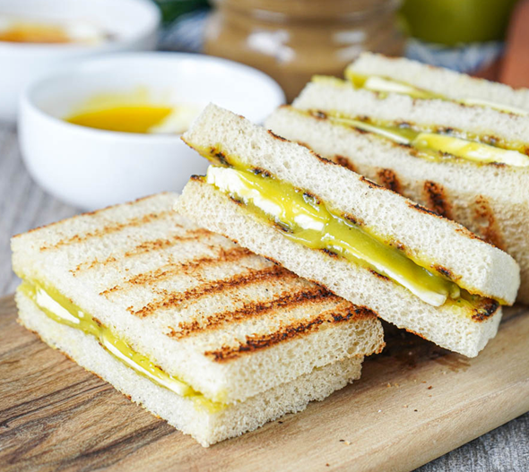

üçû Simple Kaya Toast Bites
A classic Singaporean breakfast made with kaya jam, butter, and toast.

 0 Likes
0 Likes
üßÇ Ingredients
- 2 slices of white bread
- 2 tablespoons of kaya jam
- 2 slices of cold butter
- 1 soft-boiled egg (See Recipe HERE)
- Dark soy sauce (optional)
- White pepper (optional)
üë©‚Äçüç≥ Instructions
- Toast the bread slices until golden brown.
- Spread kaya jam on one slice and place a slice of butter on top.
- Place the second slice of bread on top to form a sandwich.
- If desired, serve with a soft-boiled egg seasoned with dark soy sauce and white pepper.
üí° Tips
- Use thick-cut bread for a more substantial bite.
- For a richer flavor, use salted butter.
- Pair with a cup of traditional kopi or teh for an authentic experience.

üí¨ Comments